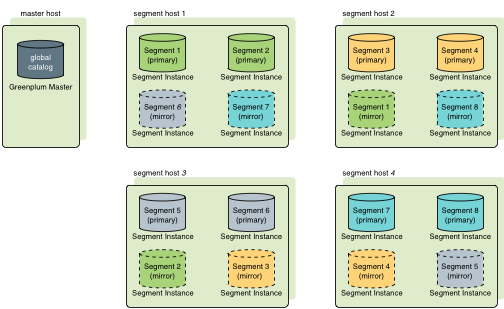
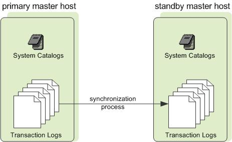

About Redundancy and Failover in SynxDB
This topic provides a high-level overview of SynxDB high availability features.
You can deploy SynxDB without a single point of failure by mirroring components. The following sections describe the strategies for mirroring the main components of a SynxDB system. For a more detailed overview of SynxDB high availability features, see Overview of SynxDB High Availability.
Important When data loss is not acceptable for a SynxDB cluster, SynxDB master and segment mirroring is recommended. If mirroring is not enabled then SynxDB stores only one copy of the data, so the underlying storage media provides the only guarantee for data availability and correctness in the event of a hardware failure.
The SynxDB on vSphere virtualized environment ensures the enforcement of anti-affinity rules required for SynxDB mirroring solutions and fully supports mirrorless deployments. Other virtualized or containerized deployment environments are generally not supported for production use unless both SynxDB master and segment mirroring are enabled.
About Segment Mirroring
When you deploy your SynxDB system, you can configure mirror segment instances. Mirror segments allow database queries to fail over to a backup segment if the primary segment becomes unavailable. The mirror segment is kept current by a transaction log replication process, which synchronizes the data between the primary and mirror instances. Mirroring is strongly recommended for production systems and required for Synx Data Labs support.
As a best practice, the secondary (mirror) segment instance must always reside on a different host than its primary segment instance to protect against a single host failure. In virtualized environments, the secondary (mirror) segment must always reside on a different storage system than the primary. Mirror segments can be arranged over the remaining hosts in the cluster in configurations designed to maximize availability, or minimize the performance degradation when hosts or multiple primary segments fail.
Two standard mirroring configurations are available when you initialize or expand a SynxDB system. The default configuration, called group mirroring, places all the mirrors for a host’s primary segments on one other host in the cluster. The other standard configuration, spread mirroring, can be selected with a command-line option. Spread mirroring spreads each host’s mirrors over the remaining hosts and requires that there are more hosts in the cluster than primary segments per host.
Figure 1 shows how table data is distributed across segments when spread mirroring is configured.

Segment Failover and Recovery
When segment mirroring is enabled in a SynxDB system, the system will automatically fail over to the mirror segment instance if a primary segment instance becomes unavailable. A SynxDB system can remain operational if a segment instance or host goes down as long as all the data is available on the remaining active segment instances.
If the master cannot connect to a segment instance, it marks that segment instance as down in the SynxDB system catalog and brings up the mirror segment in its place. A failed segment instance will remain out of operation until an administrator takes steps to bring that segment back online. An administrator can recover a failed segment while the system is up and running. The recovery process copies over only the changes that were missed while the segment was out of operation.
If you do not have mirroring enabled, the system will automatically shut down if a segment instance becomes invalid. You must recover all failed segments before operations can continue.
About Master Mirroring
You can also optionally deploy a backup or mirror of the master instance on a separate host from the master host. The backup master instance (the standby master) serves as a warm standby in the event that the primary master host becomes non-operational. The standby master is kept current by a transaction log replication process, which synchronizes the data between the primary and standby master.
If the primary master fails, the log replication process stops, and the standby master can be activated in its place. The switchover does not happen automatically, but must be triggered externally. Upon activation of the standby master, the replicated logs are used to reconstruct the state of the master host at the time of the last successfully committed transaction. The activated standby master effectively becomes the SynxDB master, accepting client connections on the master port (which must be set to the same port number on the master host and the backup master host).
Since the master does not contain any user data, only the system catalog tables need to be synchronized between the primary and backup copies. When these tables are updated, changes are automatically copied over to the standby master to ensure synchronization with the primary master.

About Interconnect Redundancy
The interconnect refers to the inter-process communication between the segments and the network infrastructure on which this communication relies. You can achieve a highly available interconnect using by deploying dual Gigabit Ethernet switches on your network and redundant Gigabit connections to the SynxDB host (master and segment) servers. For performance reasons, 10-Gb Ethernet, or faster, is recommended.